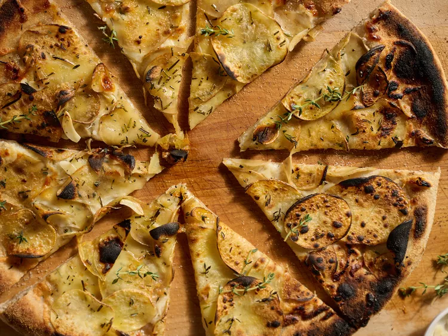

Potato Pizza
This recipe was born on a night when I hadn't gone grocery shopping, didn't have any tomato sauce or traditional pizza fixins on hand, but I did have a bag of potatoes that needed using. It has become a staple for us since that night (who doesn't love carbs on carbs!?) and has gone through dozens of iterations (with or without meat or fish, adding caramelized onions or roasted garlic as an extra layer, swapping in different types of cheese or omitting the cheese), all of which have been a hit. Because it's so simple, there are tons of things you can add to the mix and have it taste great, but you truly don't need anything other than the potatoes, herbs, and pizza dough. Anything else is just a bonus!
Ingredients
- Yukon Gold or russet potato
- cloves garlic
- olive oil or avocado oil
- rosemary
- fine sea salt or kosher salt
- freshly ground black pepper
- shredded melty cheese
- fresh pizza dough
- Parmesan cheese
- pizza seasoning
- red pepper flakes
Steps
- 1 large Yukon Gold or russet potato, thinly sliced on a mandoline
- 4 large cloves garlic, thinly sliced, or more to taste
- 2 tablespoons olive oil or avocado oil, plus more for spritzing
- 1/2 bunch thyme, rosemary, or herbs of choice, stemmed and chopped, or 1 to 2 teaspoons dried herbs
- 1/2 teaspoon fine sea salt or kosher salt, plus more to taste
- 1/2 teaspoon freshly ground black pepper, plus more to taste
- 4 ounces mixed shredded melty cheese, or more to taste
- 1 pound fresh pizza dough, stretched into a 12-inch pie
- 1 ounce Parmesan cheese, finely grated, or more as needed
- 1/2 teaspoon pizza seasoning, such as Trader Joe's® Aglio e Olio seasoning blend, or more to taste
- 1 teaspoon red pepper flakes (optional)
Home
